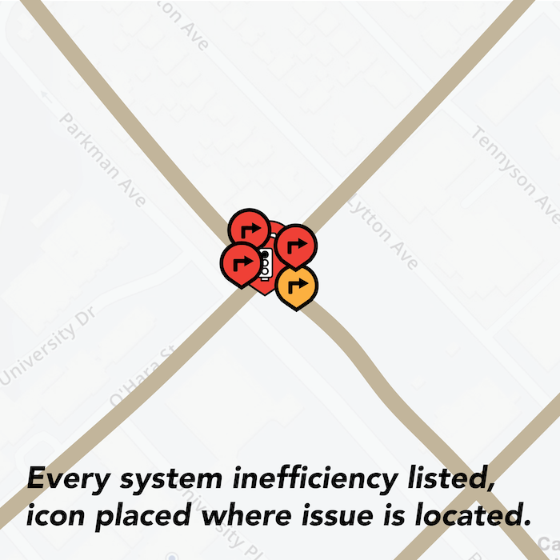
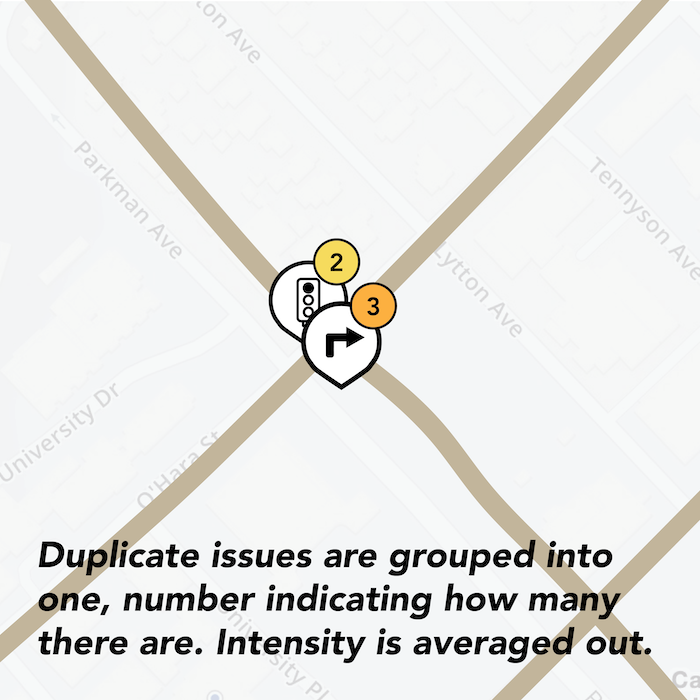
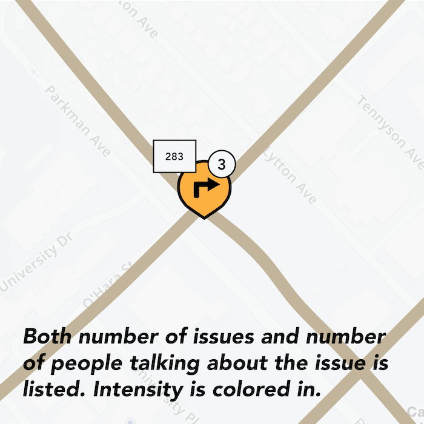
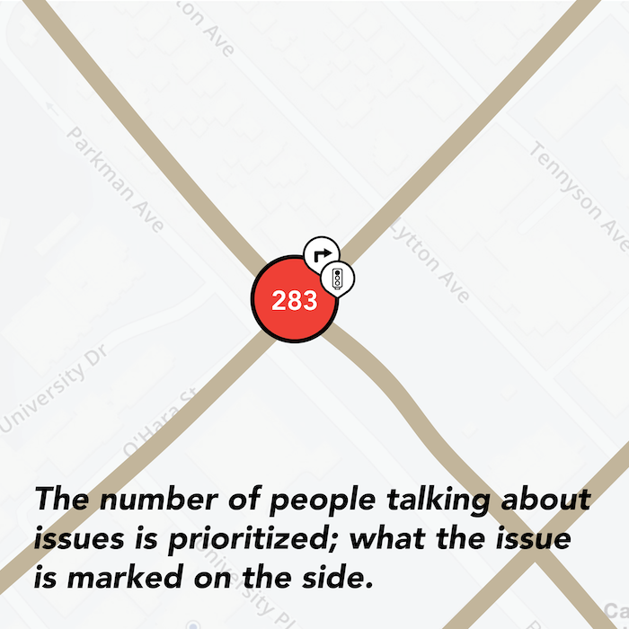

Forbes/Bouquet St
When the smaller street is green, there's more jaywalking since there are rarely any cars going
Because cars can only turn on green, the cars must wait for pedestrians that are crossing in opposing traffic
Craig/Fifth Ave
The pedestrian crosswalk is 4-way, so there are no cars crossing at the same time.
Pedestrians take advantage of this and are able to continuously cross diagonally.
Due to both the wasted time where the signal light is green but there are no cars/pedestrians waiting to go in that lane, it causes inefficiencies and higher opportunity for jaywalking. Because that cars can only turn on green, when pedestrians cross at the same time, it is an unprotected turn and there is a risk for collision.
Taking a closer look at Waze, it uses five different icons, with the background color of the icon’s circle delineating the severity of the situation. Waze also highlights the different types of roads in different colors, which, compared to Google Maps’ more subdued/pastel color palette, allows the users to clearly see what types of roads these are.
Looking at these different types of icons to tell user information, I made my decisions base on how “loud” and noticeable I want the users to understand this information. Given that my target is to bring awareness to the systematic issues at these intersections, I decided to go with a scale that was in between Waze and MapQuest.


When looking at the issue at hand, I investigated what was exactly going on at the intersections that cause and encouraged people the jaywalk. After conducting my own primary research, I dove in and mapped out what I thought a solution would look like to encourage solving this problem.
\
The app’s intended users are the pedestrians who submit the date in this crowdfunded application. In order to have the most accurate data, users are only allowed up submit their feedback on the app, within a certain radius from the intersection they report.

To appropriately review the data collected from the public, city councils or authorities can view the information on the desktop platform. Here, they are able to parse through all the different marked intersections and the comments about them.

After deciding to make this map crowdsourced, I wanted to give each marked issue a review, similar to online reviews. Each user can leave their own testimonial and intensity rating, and each intersection will have overall stats from the crowdsourced data. (I later decided to remove the user-determined intensity entirely, since it would be very subjective to have users decide how intense an issue is, and may serve to be inaccurate. Furthermore, if a pedestrian was opening an app about an issue they had, it’s fairly certain to say that the issue is rather problematic.)

By exploring different visualizations of the icons, I reevluated the situation: is the problem defined by the number of issues or the number of people talking about the issue?
   
For more information, check out my medium post.